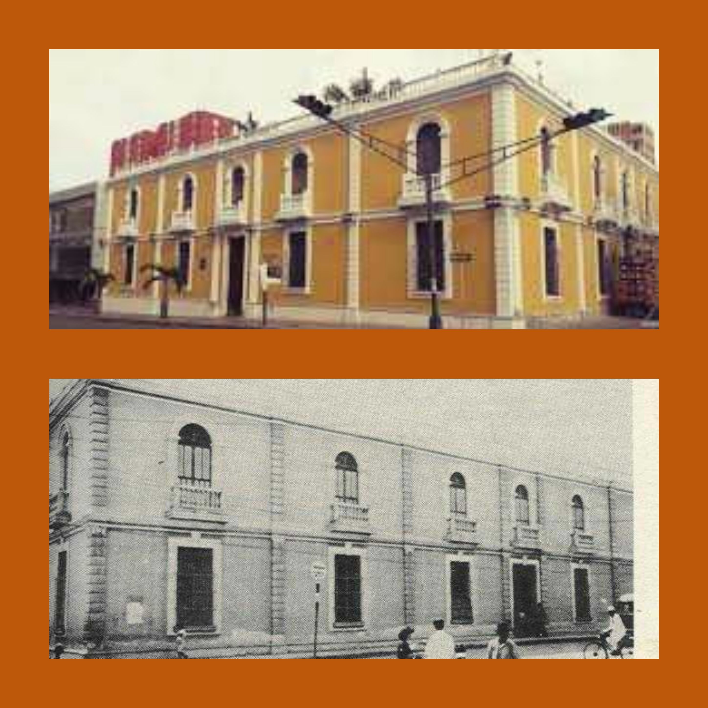

EVOLUCION HISTORICA DEL PALACIO DE GOBIERNO
Las técnicas y el lente suspicaz de fotógrafos larenses y de otras latitudes, se reúnen en una muestra fotográfica donde las imágenes trasladan al observador a la evolución de uno de los patrimonios edificados más importantes de la región.
Fotografías que cuentas la idiosincrasia larense y la importancia histórica de las diferentes sedes del Palacio de Gobierno desde 1908, pasando por su demolición y reestructuración inaugural de 1933 hasta nuestros días.
Es una exposición Única que establece el antes y el después de este Patrimonio Regional, donde se disponen 33 imágenes descriptivas que cuentan de forma cronológica, la historia de la veintena de mandatarios que han despachado desde esta sede y la han modificado.
Sin duda, una mirada al pasado que refleja la importancia evolutiva del Barquisimeto de Ayer y de Hoy.
PERSONAJES DE LA INDEPENDENCIA

Inspirados en la gesta independentista, 12 artistas plásticos larenses muestran en su lienzo la pasión por el arte y la historia, en una combinación que revive héroes y heroínas que participaron en la lucha libertaria de Venezuela.
Este espacio honrará a hombres y mujeres próceres de una hazaña que llevo el ideal de independencia a todo el continente, quienes con su esfuerzo y tenacidad lograron la libertad de un pueblo noble y lleno de riqueza intelectual, que este año de gloria conmemora su Bicentenario.
Entre ellos, encontraremos al Libertador Simón Bolívar, General Juan Jacinto Lara, General Pedro León Torres, Francisco de Miranda, Juan Bautista Arismendi, el Mariscal de Ayacucho Antonio José de Sucre, Antonio Ricaute, Atanasio Girardot, José Leonardo Chirinos; las Heroínas Juana Ramírez y su batería de mujeres, además de Luisa Cáceres de Arismendi, Dominga Ortiz de Páez, Josefa Camejo, Eulalia Buroz, entre otros.